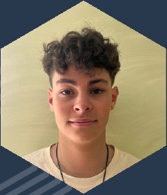
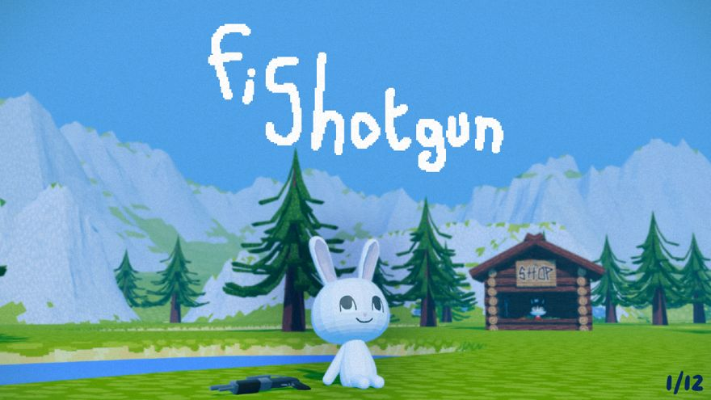
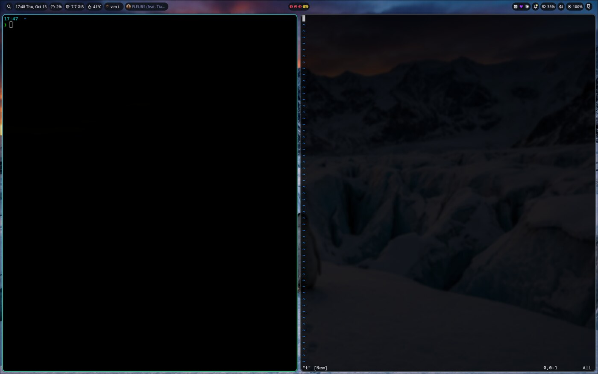

Ce que je construis
Des projets concrets : un jeu multijoueur, une configuration Linux portable, un assistant relié à l'IA et un futur environnement de laboratoire.
EPITA Toulouse · Cycle préparatoire
Étudiant en deuxième année du cycle préparatoire à l'EPITA Toulouse (2026-2027), je développe des projets personnels et scolaires qui mêlent programmation, automatisation et exploration des systèmes.

Je recherche une alternance de trois ans à partir de septembre 2027. Mon domaine précis en cybersécurité reste volontairement ouvert : je veux approfondir plusieurs approches (systèmes, automatisation, sécurité applicative, plateformes d'entraînement) avant de choisir une spécialisation.
Je peux déménager et je vise en priorité Toulouse, l'Occitanie, Paris et Rennes, tout en restant ouvert à d'autres opportunités.
Des projets concrets : un jeu multijoueur, une configuration Linux portable, un assistant relié à l'IA et un futur environnement de laboratoire.
Expérimenter, documenter les difficultés, distinguer ce qui fonctionne de ce qui reste exploratoire, puis améliorer progressivement.
Mon profil GitHub est créé. Mes dépôts sont encore privés pendant leur développement, afin d'éviter de publier des données personnelles ou des configurations sensibles. Ils seront rendus publics après nettoyage et vérification.
Formation
Un parcours tourné vers la pratique : informatique, sciences, expression et travail par projets.
2026-2027
Algorithmique, programmation, architecture des ordinateurs, mathématiques, physique, électronique, anglais et expression. La pédagogie par projets permet de confronter mes connaissances à des problèmes d'intégration réels.
2025-2026
Réalisation en équipe du jeu multijoueur Fishotgun. Ce projet constitue aujourd'hui ma preuve la plus complète en programmation, débogage et travail collectif.
2025
Lycée Rosa Luxemburg, Canet-en-Roussillon. Spécialités de terminale : mathématiques et numérique et sciences informatiques (NSI), avec l'option mathématiques expertes. La spécialité LLCE anglais a également été suivie en première.
2022
Participation à 16 ans et classement dans le top 5. Cette expérience intensive m'a confronté tôt à l'autonomie, à la recherche de solutions et au travail entre participants. J'ai ensuite poursuivi le lycée afin d'obtenir le baccalauréat.
Je progresse surtout lorsque je dois relier plusieurs briques : code, environnement, outils, organisation et validation. Les projets ci-dessous montrent cette progression, avec leurs résultats et leurs limites.
Réalisations
Projet scolaire · 2025-2026 · Python et Ursina · Équipe Rabbit Hole (4 étudiants)

Jeu multijoueur développé en Python avec Ursina. Sur une île inspirée de l'univers d'Animal Crossing, le joueur repère des poissons puis les capture au fusil à pompe. Le jeu comprend un Fishodex, des améliorations, une boutique et des fonctions multijoueurs.
J'ai principalement travaillé sur la physique du joueur. J'ai aussi contribué aux déplacements des poissons et créé les BusSpots de téléportation vers la boutique, avec les messages réseau associés.
La première physique était incompatible avec les collisions. L'équipe a expérimenté Ursina puis Bullet, mais leur intégration créait des conflits avec les entités du moteur. Plus tard, la physique ne fonctionnait plus de la même manière sur toutes les machines. Des conflits entre branches m'ont conduit à repartir d'une branche à jour et à réécrire une version fonctionnelle et simplifiée.
Une version 1.0 jouable, publiée avec les fonctions principales : pêche, Fishodex, boutique, sauvegarde et multijoueur.
La physique du jeu : elle a demandé plusieurs reprises, des essais d'intégration et un compromis entre ambition et stabilité.
Projet personnel · Commencé fin septembre 2026 · Shell et Lua

Retrouver rapidement un environnement cohérent sur plusieurs distributions : détecter le système, installer les dépendances nécessaires, puis appliquer une configuration adaptée au shell et à l'environnement graphique.
Environ 80 % de Shell et 20 % de Lua, avec Git pour le suivi.
Les commandes, paquets et environnements graphiques diffèrent selon les distributions. Le projet sépare donc la détection, l'installation des dépendances et les configurations propres à Hyprland, Noctalia ou Xfce.
Le dépôt reste privé pendant son développement, afin d'éviter de publier une adresse, une IP, un jeton ou une autre donnée personnelle.
Projet personnel · Commencé début octobre 2026 · En cours d'étude
Jarvis vise à automatiser des tâches personnelles comme le résumé d'une journée et le tri des mails. Le projet n'est pas terminé et il n'y a pas de démonstration. À ce stade, je me concentre sur les méthodes utilisées par les assistants existants et sur une architecture qui conserve un contrôle humain.
Les solutions courantes utilisent OAuth et l'API Gmail pour lire, filtrer et appliquer des libellés. Les clés, jetons, messages et fichiers de contexte doivent rester hors du dépôt.
Exploration en cours
Je dispose d'un ancien ordinateur que je souhaite transformer en serveur d'expérimentation. Je n'ai pas encore arrêté la distribution : je compare les possibilités, les besoins matériels et les solutions de conteneurisation. Cette partie est une démarche de recherche, et non une infrastructure déjà en place.
Objectif : concrétiser progressivement un environnement où apprendre Linux, Docker, le réseau et les bonnes pratiques de sécurisation.
Exploration cybersécurité
Ma pratique cyber a commencé à la rentrée de septembre 2026. Elle est encore récente et s'inscrit dans une démarche de découverte.
TryHackMe, Root-Me et Hack The Box. Je pratique principalement avec des amis, ce qui favorise les échanges de méthodes et l'explication mutuelle.
Je ne présente pas de badge individuel. Je préfère décrire la démarche et les apprentissages réellement observés.
J'ai participé à trois hackathons : un pendant l'année de terminale et deux durant ma première année à l'EPITA. Je les mentionne comme expériences collectives, sans classement ni contribution technique que je ne pourrais documenter.
Ce site deviendra lui-même un support d'apprentissage. La démarche prévue : effectuer des tests assistés par l'IA, analyser personnellement chaque résultat, confirmer les problèmes réels, corriger les failles, puis refaire les tests et documenter les limites restantes.
Ce projet doit transformer une intention générale en preuves : un problème confirmé, son impact, la correction appliquée et le résultat du nouveau test.
Je ne me spécialise pas encore prématurément. J'explore les systèmes, l'automatisation, la sécurité applicative et les laboratoires en ligne afin d'identifier le domaine à approfondir pendant le cycle ingénieur et l'alternance.
Analyse de compétences
Chaque compétence est reliée à une action identifiable, un résultat et une limite.
Fishotgun : reprise de la physique, essais avec Ursina et Bullet, contribution aux déplacements des poissons, création des BusSpots et des messages réseau.
Preuves : version 1.0, site du projet et rapport final.
config-linux : détection de distributions, adaptation à quatre familles de gestionnaires de paquets, sauvegardes, liens symboliques et configuration de plusieurs environnements graphiques.
Preuves : dépôt Git privé et capture du résultat.
Fishotgun, hackathons et emplois saisonniers : répartition des tâches, intégration de branches, coordination avec d'autres développeurs, respect de délais et communication avec collègues ou clients.
Preuves : plus indirectes que pour les deux compétences précédentes.
Jarvis, le homelab et la sécurisation du portfolio sont encore récents. Ils montrent une démarche et une direction, mais ne remplacent pas les preuves plus solides apportées par Fishotgun et config-linux.
Achever les projets en cours, produire des démonstrations reproductibles, nettoyer les dépôts avant publication et transformer les explorations cyber en comptes rendus techniques vérifiables.
Expériences professionnelles
Mes emplois saisonniers m'ont appris à contribuer à un résultat collectif dans des environnements concrets et exigeants.
Été 2026 · trois mois
À l'aide d'un scanner indiquant l'emplacement des articles, j'ai préparé et contrôlé les commandes afin qu'elles soient complètes et prêtes à l'heure. J'ai travaillé dans tous les secteurs : produits ambiants, ramasse des petits articles, chambre froide, fruits et légumes et surgelés. J'ai également participé au réapprovisionnement.
Respect des délais et des procédures, alternance entre chaleur, chambre froide et congélateur, organisation pour éviter les oublis.
Travail en équipe, communication avec collègues et clients, efficacité en période d'affluence, contrôle du résultat avant livraison.
Été 2025
J'ai participé au démontage d'une serre et à l'entretien de cultures d'artichauts. Ce travail physique m'a demandé de respecter les consignes, de m'intégrer rapidement à l'équipe et de maintenir une qualité régulière dans la durée.
Ces deux expériences renforcent une même qualité utile en informatique : rester organisé et fiable lorsque le résultat dépend du travail coordonné de plusieurs personnes.
Bilan et perspectives
Mon objectif est de terminer et documenter mes projets avant septembre 2027, puis de les utiliser comme preuves dans ma recherche d'alternance.
Programmer et reprendre un système imparfait, utiliser Git dans un projet collectif, automatiser une configuration Linux et analyser les différences entre plusieurs environnements.
Je suis dans une phase d'exploration : je cherche à concrétiser mes objectifs et à comparer des solutions correctes avant de figer mes choix.
Ce portfolio ne cherche pas à présenter une expertise déjà acquise. Il montre une progression, des réalisations vérifiables et une manière de travailler : expérimenter, comprendre les difficultés, documenter les résultats et reconnaître les limites.
Fishotgun démontre ma capacité à contribuer à un logiciel collectif ; config-linux illustre mon intérêt pour les systèmes et l'automatisation ; Jarvis et le homelab donnent la direction de mes prochains apprentissages.
Je souhaite poursuivre cette progression dans une entreprise qui me permettra de découvrir plusieurs dimensions de la cybersécurité avant de choisir une spécialisation.
Me contacter
Je recherche une alternance de trois ans à partir de septembre 2027. N'hésitez pas à m'écrire.